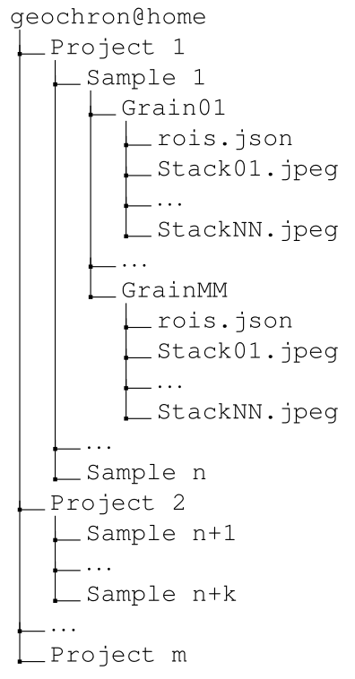
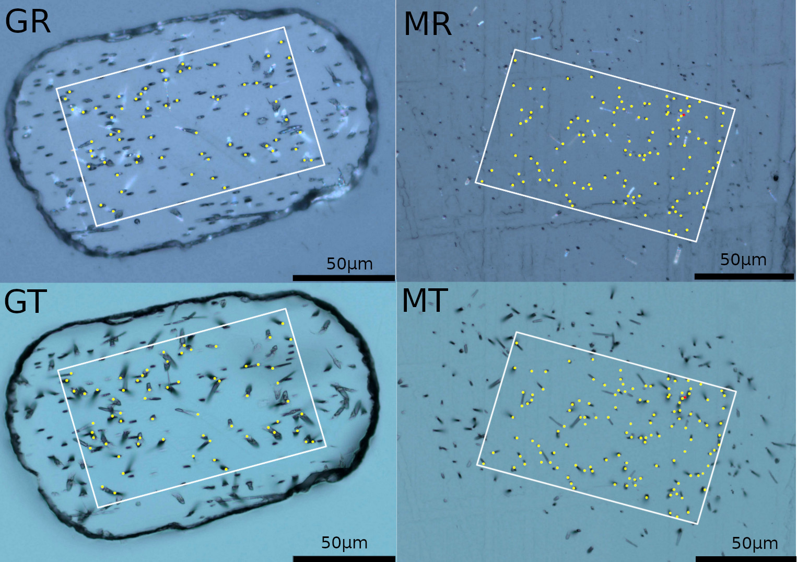
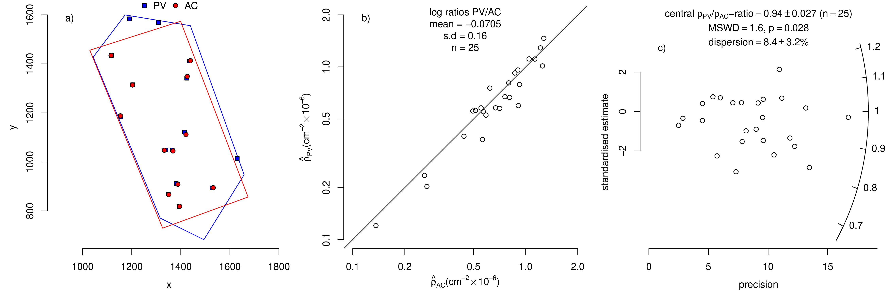
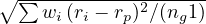
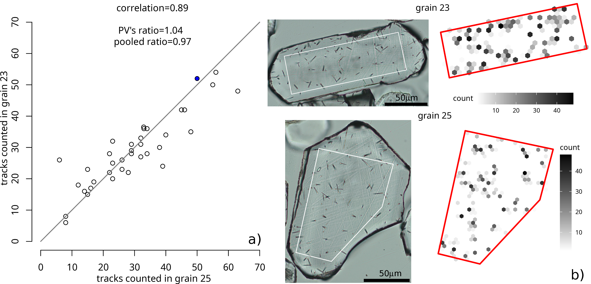

FAIR fission track analysis with geochron@home
Pieter Vermeesch1, Tim Band1, Jiangping He2
Rex Galbraith1 and Andrew Carter 3
1 University College London, London WC1E 6BT, United Kingdom
2 King's College London, London SE1 8WA, United Kingdom
3 Birkbeck, University of London, London WC1E 7HX, United Kingdom
Abstract
Fission track thermochronology is based on the visual analysis of optical
images. This visual process is prone to observer bias. Fission track datasets
are currently reported as numerical summary tables. The interpretation
of these tables requires a high degree of trust between the fission
track analyst and the user of the data. geochron@home is software
that removes this requirement of trust. It combines a browser-based
‘virtual microscope’ with an online database to provide FAIR (Findable,
Accessible, Interoperable and Reproducible) access to fission track data.
geochron@home serves four different purposes. It can be used (1) to
count fission tracks in ‘private mode’, i.e. hidden from other users on
the internet; (2) to archive fission track images and counts for inspection
by other users; (3) to create tutorials for new students of the fission
track method; and (4) to serve randomly selected selections of images to
citizen scientists. We illustrate these four applications with examples that
demonstrate (1) geochron@home’s ability to compare and combine fission
track counts for multiple users within a lab group; (2) the value of the
geochron@home archive in the peer review system; (3) the use of simple
tutorials in teaching novice users how to count fission tracks; and (4) the
opportunities and challenges of crowd-sourced fission track analysis.
geochron@home was written in Python and Javascript. Its code is
freely available for inspection and modification, allowing users to set up
their own geochron@home server. Alternatively, users who would like to
upload data to the archive, but do not have the facilities to set up their own
server, may use the server at University College London free of charge. The
archive accepts image stacks acquired on any type of digital microscope,
and accommodates fission track data (counts and length measurements)
from external fission track analysis suites such as Fission Track Studio
and TrackFlow.
We anticipate that the introduction of FAIR workflows will make
fission track data more accurate and more future proof. Storing fission
track data online will benefit future developments in fission track
thermochronology. For example, archival datasets of peer reviewed fission
track counts can be used to train and improve machine learning algorithms
for automated fission track analysis. We invite other geochronological
methods to follow the fission track community’s lead in FAIR data
processing. This would benefit all the Earth Science disciplines that
depend on geochronological data.
1 Introduction
Science is on an irreversible trajectory towards greater openness. Geochronology is no
exception to this trend, as this journal illustrates with its open access and review
policies. Funding agencies increasingly demand that research results and data are
shared with the public. Currently, geochronological data are generally provided as
flat tables of dates or isotopic ratio estimates. However, in other fields of
science such as physics, it is common practice to share the raw unprocessed
measurements along with processing instructions (e.g., Abbott et al., 2016). This
paper moves geochronology in the same direction. It presents a mechanism
to generate and store fully FAIR (Findable, Accessible, Interoperable and
Reproducible; Wilkinson et al., 2016) data in the context of fission track
analysis.
Unlike most other geochronometers, which require mass spectrometers to estimate
parent-daughter ratios, fission tracks are observed under an optical microscope and
counted by a human observer. In recent years, digital microscopy has moved fission
track data acquisition from the ocular lenses of a microscope to the computer
screen (Gleadow et al., 2009; Van Ranst et al., 2019; Gleadow, 2019).
Ongoing developments in artificial intelligence generate further opportunities to
improve the throughput and accuracy of fission track data (Nachtergaele and
De Grave, 2020; Li et al., 2022; Ren et al., 2023; Boone et al., 2025). But
despite the richness of the digital datasets produced by these novel tools, fission track
data are still reported as numerical summary tables. These tables require an
unnecessary degree of trust between the ‘producer’ and ‘consumer’ of the
data.
geochron@home is a free and open software platform that allows geochronologists
to share their raw fission track data over the internet for perusal by peer reviewers,
colleagues and the general public. geochron@home is a virtual petrographic
microscope connected to a database with digital image stacks of etched fission track
samples. The platform can be used to acquire, archive and inspect fission
track data in full adherence to the FAIR data principles. In Section 2, we
will describe geochron@home’s software architecture in five steps. We will
show that this architecture accommodates imagery from any type of digital
microscope. It enables flexible workflows that can be adapted to four different
applications.
Using image stacks of Mount Dromedary apatite, we will show how geochron@home
can be used to count fission tracks in ‘private mode’ (Section 3); to archive published
fission track datasets in ‘public mode’ (Section 4); to build tutorials for training
purposes (Section 5); and to crowd-source fission track data on the internet
(Section 6). Because geochron@home is free and open, it can be extended and
improved by any interested party. We make some suggestions for future
improvements in Section 7. We hope that the geochron@home’s example will
be followed in other geochronological disciplines, as this will benefit not
only geochronology itself, but all the other disciplines that depend on it
(Section 8).
2 Workflow
The geochron@home workflow separates the acquisition of microscope images from
their analysis, providing the flexibility to accommodate data from different
microscope manufacturers. The workflow can be broken down into five steps.
- Acquisition of z-stacks of microscope images in reflected and transmitted
light for each of the grains in a sample and, optionally, for the
accompanying external detector (Figure 1). At University College
London, this first step is currently accomplished by a Python macro
within Zeiss’ Zen Blue software. However, geochron@home can also
accommodate imagery from other platforms, such as Fission Track
Studio (Zeiss; Gleadow et al., 2009) and TrackFlow (Nikon; Van Ranst
et al., 2019).
-
Prepare the z-stacks for uploading to the geochron@home database. This
database requires that the images are organised as a nested sequence
of directories, in which a ‘project’ consists of ‘samples’ that comprise
a number of ‘grains’. Each grain corresponds to a numbered sequence
of .jpeg images, one for each layer of the z-stack. Note that the
raw microscope images are generally not stored as .jpeg files but in
uncompressed .czi (for Zen Blue), .tif (for Fission Track Studio 1 and 2)
or .nd2 (for Nikon/TrackFlow) formats. Conversion from these raw images
to sequences of .jpeg files is done with a shell script using Imagemagick
(Still, 2006).
In addition to the sequence of .jpeg images, a low level ‘grain’ folder
can also include an optional file called roi.json containing the vertices
of a default region of interest for spontaneous (and/or induced) track
counting. The database structure can also accommodate existing fission
track counting results. For example, if a user has already counted their
fission tracks in Fission Track Studio, then they can store those results in
a .json file at the ‘sample’ level directory. Because Fission Track Studio
stores its results in an .xml format, a second conversion script was created
to translate those results into an equivalent .json format. Both .xml
and .json are extensible, providing a mechanism to accommodate future
updates of the metadata (Section 7).
The directory structure can be summarised as follows:

- Upload the data to the geochron@home platform. geochron@home is a Django
web-app with a PostgreSQL database. The database can be accessed via
a Python API and a (more limited) web-based GUI. Accessing the API
requires administrator privileges. Administrators can create projects, samples
and grains; download data; and set the access rights of ‘ordinary’ users. Projects
can be private or public. The source code and installation instructions for
geochron@home are freely available over GitHub (see the Data Availability
statement at the end of this paper). This allows fission track users to set up
their own server. Alternatively, fission track labs can upload their data to the
UCL server by contacting the corresponding author.
-
Analyse the images with a browser-based ‘virtual fission track microscope’
powered by the Leaflet library (JavaScript). This virtual instrument acts as a
front-end to geochron@home. It has a simple user interface with controls to
zoom, pan and focus in or out of the digital image stack. Depending on the
permissions granted to the user by the administrator, the virtual microscope
offers a number of different options. Entry level ‘ordinary’ users are only allowed
to count tracks by clicking within a pre-defined ‘region of interest’. In contrast,
‘superusers’ are allowed to define their own regions of interest. Once the user is
satisfied that they have counted all the fission tracks in a particular grain, they
can submit the results to the server. They are then presented with a new set of
images until all grains are counted.
The determination of who qualifies as a ‘superuser’ is made by the administrator
of each geochron@home server. For the UCL server, this role is held by the
first author of this paper. Because the geochron@home source code is free and
open, anyone may set up and administer their own server independently of the
development team.
- Post-processing. The fission track data can either be downloaded as a flat data
table of counts and areas, or as a .json file containing the locations of all
the counted tracks. geochron@home does not provide any tools to post-process
these files. They are meant to be passed on to other tools such as spreadsheet
applications or IsoplotR (Vermeesch, 2018).
The five-step workflow can be used for several applications, including
(1) conventional fission track analysis; (2) archiving published fission track
results; (3) building tutorials; and (4) crowd-sourcing fission track data. The
next sections of this paper will illustrate these applications with real world
examples.

Figure 1:
Screenshots of raw fission track data for the external detector method
in geochron@home. GR: an apatite grain in reflected light; GT: the same grain
in transmitted light; MR: the corresponding mica detector in reflected light;
MT: the mica detector in transmitted light. White rectangles mark the region of
interest (ROI), within which an analyst has counted fission tracks by marking
their etch pits (shown in yellow). The raw data for this figure can be viewed on
the geochron@home archive (https://github.com/pvermees/GaHa).
3 Counting fission tracks in ‘private mode’
Administrators can define regions of interest (ROI) and count or edit the fission track
coordinates of any grain in a geochron@home database. They can also assign other
users to groups, and give these groups access to a subset of the projects in the
database. Administrators have fine control over the permissions of the groups.
For example, they can allow the members of one group to define their own
ROIs, whilst requiring members of another group to count fission tracks in
predefined ROIs. Groups provide a mechanism to compare and combine
the results of multiple analysts of the same sample. Figure 2 illustrates
this with two sets of fission track density estimates for the same sample of
Mount Dromedary apatite (Green, 1985), analysed by two users (PV and
AC).
Let N1 and N2 be the numbers of spontaneous tracks counted by the two users
over areas A1 and A2, respectively. Then their estimated track densities are given by
 1 = N1∕A1 and
1 = N1∕A1 and  2 = N2∕A2. In this situation when the two areas overlap, N1 and
N2 cannot be treated as independent Poisson counts because the two analysts will
count some of the same tracks. It can be shown that, under simple (ideal)
assumptions, the uncertainty of the ratio of the estimated track densities is given
approximately by
2 = N2∕A2. In this situation when the two areas overlap, N1 and
N2 cannot be treated as independent Poisson counts because the two analysts will
count some of the same tracks. It can be shown that, under simple (ideal)
assumptions, the uncertainty of the ratio of the estimated track densities is given
approximately by
where N0 is the number of tracks counted by both observers in the area of overlap
(A0, say) between their respective ROIs.
The combined data plots of Figures 2b and c contain two sets of counts for
25 grains, with ∑
N1 = 686 (PV) and ∑
N2 = 679 (AC), and a weighted
mean track density ratio 1∕ 2 = 0.94 with relative standard error 0.013. PV
counted 600 tracks in those common areas A0, of which 549 were also counted
by AC. Conversely, AC counted 622 tracks of which 549 were also counted
by PV. The ratio of the two analysts’ track density estimates based just
on the common area is therefore 600/622 = 0.965 with relative standard
error 0.018, calculated from Equation 1, with N1 = 686, N2 = 679 and
N0 = 549. This is close to the weighted mean ratio of 0.94 (Figure 2c),
and is slightly nearer to 1. It indicates that PV under-counts the Mount
Dromedary apatite by 3.5% relative to AC. The existence of ‘observer bias’ is
well documented (Tamer et al., 2025). It is one of the reasons why fission
track analysis is often done relative to age standards: observer bias does not
have to be a problem provided that it is consistent between samples and
standards.
2 = 0.94 with relative standard error 0.013. PV
counted 600 tracks in those common areas A0, of which 549 were also counted
by AC. Conversely, AC counted 622 tracks of which 549 were also counted
by PV. The ratio of the two analysts’ track density estimates based just
on the common area is therefore 600/622 = 0.965 with relative standard
error 0.018, calculated from Equation 1, with N1 = 686, N2 = 679 and
N0 = 549. This is close to the weighted mean ratio of 0.94 (Figure 2c),
and is slightly nearer to 1. It indicates that PV under-counts the Mount
Dromedary apatite by 3.5% relative to AC. The existence of ‘observer bias’ is
well documented (Tamer et al., 2025). It is one of the reasons why fission
track analysis is often done relative to age standards: observer bias does not
have to be a problem provided that it is consistent between samples and
standards.

Figure 2: Comparison of fission track data for Mount Dromedary apatite by
two analysts (PV = Pieter Vermeesch and AC = Andrew Carter). a) the track
counts and ROIs of both users for grain 3, shown in blue (PV) and red (AC);
b) comparison of the track densities for PV and AC for all 25 grains analysed
by the two analysts with a reference line for  PV = AC; c) radial plot of the
same data, using Equation 1.
PV = AC; c) radial plot of the
same data, using Equation 1.
4 The geochron@home archive (GaHa)
Once a set of fission track images has been analysed and the analyst is confident that
the results are accurate, the status of the results can be changed from private to
public. This makes the results visible over the internet as a list of URLs, where each
grain number and user ID corresponds to a unique address. The geochron@home
archive (GaHa) brings fission track geochronology into the era of FAIR science. It
allows peer reviewers to inspect the raw data from which thermochronological
inferences are made. The archive is open to submissions from any fission track
laboratory, free of charge. However, as mentioned in Section 2, it is also possible to
establish a new archive elsewhere. At the time of writing, GaHa contains data for
three studies:
- Guo et al. (2025): this is an LA-ICP-MS based fission track study of
detrital apatite from the northeastern Tibetan Plateau. It contains image
stacks of semitracks in 1146 apatite grains from 16 different samples.
- Tamer et al. (2025): this is a round-robin study in which digital image
stacks of 44 apatite crystals were circulated among 14 different analysts.
These analysts used the FastTrack image analysis software (which is part
of the Fission Track Studio suite; Gleadow et al., 2009) to define their
own ROIs and count the semitracks and horizontally confined fission tracks
in them. GaHa presents the results of the round-robin experiment as a
44 × 14 grid of URLs.
- This study: All the raw fission track data used in this article are available
on GaHa, along with the post-processing software that was used to produce
the figures. Together, these resources provide the reader with all the
information needed to fully reproduce our results, ‘from cradle to grave’.
To our knowledge, this is the first geochronological study to do so.
5 geochron@home tutorials
Given the right permissions (assigned by an administrator), users can build tutorial
pages by annotating features in fission track images. These features can be tracks or
other objects such as scratches, inclusions, dislocations or holes. A selection of
tutorial pages is presented to new users when they first log into geochron@home.
They must complete the tutorial before being allowed to count fission tracks. The
tutorial pages can be revisited at any time by visiting the corresponding link on the
geochron@home landing page.
Some exemplar annotations in the current tutorial pages were made by an
experienced fission track analyst (Andrew Carter). This basic tutorial provides a
quick and easy mechanism to train novice users in the art of fission track analysis.
The tutorial pages are in their infancy and offer only a limited degree of
interactivity. Users can click on features to read the annotations. A more detailed,
comprehensive tutorial will grow with the wider input from experienced
analysts and future plans include the addition of fully interactive ‘quizzes’
(Section 8). The limitations of the current tutorials are apparent in the
results of the crowd-sourcing experiment described in the next section of this
paper.
6 Crowd-sourcing fission track data
In 1906, Sir Francis Galton visited a county fair in which a contest was held to guess
the weight of an ox. 787 people participated in the event. Galton discovered that the
median of all their estimates was within 0.8% of the true weight of the ox and more
accurate than 90% of the individual estimates. Such is the ‘wisdom of crowds’
(Galton, 1907). Similar effects are seen in fission track geochronology. An
interlaboratory comparison study by Miller et al. (1985) showed that the average of
several fission track age estimates is closer to the known age of mineral standards
than the age obtained by individual observers. Inspired by these previous
experiments, we used geochron@home to bring fission track analysis to a proverbial
‘county fair’ of citizen scientists.
We here present the results of a type of ‘crowd-sourcing’ experiment that was
carried out at UCL as part of an undergraduate course in isotope geology. 68
students were asked to create an account on the geochron@home server by
selecting a unique username and password. After spending a few minutes to
complete the compulsory tutorial (Section 5), they were asked to count fission
tracks in randomly assigned image stacks of Mount Dromedary apatite. Each
student was required to analyse at least 15 grains, using pre-defined ROIs. In a
matter of hours, the students amassed a dataset of 37,331 fission track counts
in 34 grains. This large dataset was parsed into separate data files — one
for each student — which they processed during an assessed programming
exercise.
| grain ID
| user | 1 | 41 | 32 | 3 | 4 | 10 | 28 | 31 | 11 | 30 | 22 | 34 | 12 | 36 | 27 | 6 | 2 | 15 | 8 | 38 | 7 | 25 | 23 | 39 | 43 | ng | rp | sp |
| | | | | | | | | | | | | | | | | | | | | | | | | | | | |
| PV | 9 | 10 | 11 | 12 | 14 | 14 | 18 | 19 | 21 | 21 | 22 | 22 | 25 | 25 | 27 | 28 | 32 | 35 | 37 | 44 | 46 | 50 | 52 | 63 | 66 | 25 | 1.00 | .00 |
| | | | | | | | | | | | | | | | | | | | | | | | | | | | |
| 255 | | | 15 | 16 | 18 | 17 | 25 | 22 | | | 23 | 26 | | 25 | 31 | | 31 | 39 | 40 | | 37 | 63 | 48 | 65 | 67 | 18 | 1.08 | .84 |
| 271 | 9 | 11 | 14 | 14 | 16 | 15 | 23 | 18 | 22 | 22 | 23 | 19 | 28 | 22 | 27 | 29 | 31 | 35 | 34 | 41 | 46 | 56 | 54 | 52 | 56 | 25 | .99 | .61 |
| 215 | 10 | 10 | 12 | | 9 | | 25 | 20 | 19 | 23 | 22 | 22 | | | | 35 | 30 | 34 | 36 | 34 | 56 | | 44 | 62 | 62 | 19 | .99 | .85 |
| 236 | 9 | 9 | | | | | 18 | | 19 | 18 | 21 | 20 | 27 | 23 | 28 | 30 | | 38 | | 41 | 39 | 55 | | | | 15 | .98 | .49 |
| 229 | 8 | | | 15 | 11 | 17 | 26 | | 21 | | 30 | | 36 | 24 | 35 | | 31 | | 30 | 29 | | 55 | 50 | 55 | 30 | 17 | .95 | 1.62 |
| 278 | 11 | 9 | 13 | | 9 | 17 | | 20 | 19 | 27 | | 20 | | 22 | 28 | | | | 37 | | 39 | 44 | | 52 | | 15 | .94 | .77 |
| 216 | 8 | 11 | | | | 15 | | 20 | 22 | | 20 | 17 | | 20 | 27 | | 31 | | 34 | 39 | 36 | | | 57 | | 14 | .91 | .51 |
| 249 | 7 | 10 | 11 | 9 | 14 | 15 | 21 | 18 | | 19 | 21 | 21 | 27 | 27 | 26 | | 26 | 27 | 34 | 41 | 35 | 45 | 42 | 42 | 54 | 23 | .88 | .68 |
| 246 | 9 | 10 | 10 | 16 | 10 | 15 | 18 | 16 | 21 | 17 | 22 | 20 | 24 | 21 | 28 | 29 | 25 | 30 | 37 | 36 | 29 | 46 | 42 | 46 | 58 | 25 | .88 | .70 |
| 241 | 7 | 10 | | | | 16 | 17 | 19 | | | | | | 26 | 27 | 26 | 28 | 30 | | 32 | 36 | | 36 | | 58 | 14 | .87 | .67 |
| | | | | | | | | | | | | | | | | | | | | | | | | | | | | |
| 262 | 6 | 7 | 7 | 8 | 4 | 15 | 7 | 9 | 12 | 14 | 8 | 17 | 9 | 13 | 3 | 17 | 11 | 18 | 14 | 17 | 7 | 15 | 23 | 6 | 15 | 25 | .39 | 1.13 |
| 266 | | | 5 | 6 | | 9 | | | | 8 | | | 10 | | 14 | 11 | 13 | 11 | 14 | | 13 | | | 14 | 24 | 13 | .36 | .56 |
| 275 | 4 | 7 | 12 | 8 | 2 | 7 | 5 | 12 | 12 | 10 | 15 | 15 | 2 | 9 | 13 | 5 | 8 | 9 | 6 | 12 | 4 | 6 | 26 | 17 | 32 | 25 | .36 | 1.14 |
| 268 | 2 | 4 | 6 | 4 | 3 | 8 | 4 | 4 | 7 | 5 | 5 | 8 | 9 | 6 | 13 | 10 | 13 | 12 | 16 | 16 | 6 | 17 | 19 | 20 | 12 | 25 | .32 | .55 |
| 244 | | 5 | 3 | | 4 | | | | 6 | 12 | 6 | | | 4 | | 13 | | | | | 10 | 9 | | 23 | 17 | 12 | .30 | .65 |
| 232 | 4 | 4 | 5 | 6 | 2 | 6 | 4 | 4 | 6 | 8 | 7 | 6 | 8 | 10 | 10 | 13 | 8 | 10 | 7 | 7 | 14 | 12 | 18 | 17 | 17 | 25 | .29 | .46 |
| 283 | 3 | 5 | 5 | 6 | 0 | 15 | 8 | 5 | 6 | 5 | 6 | 5 | 5 | 8 | 5 | 4 | 10 | 6 | 5 | 5 | 5 | 8 | 6 | 9 | 6 | 25 | .21 | .88 |
| 228 | | | 3 | 2 | | 4 | 4 | 3 | 4 | 4 | | 6 | 4 | 4 | | 6 | 4 | | 8 | 8 | 12 | 8 | 8 | | 6 | 18 | .18 | .30 |
| 253 | 1 | 1 | | | 2 | 5 | 2 | | | 6 | 4 | 2 | 3 | 3 | 3 | | 4 | 3 | | 7 | 5 | | 5 | | | 16 | .13 | .32 |
| 245 | 1 | 1 | | | 3 | 2 | 2 | 3 | 2 | 4 | | 1 | 4 | 0 | | 4 | 6 | 3 | 4 | 3 | 3 | 7 | | 4 | 5 | 20 | .10 | .28 |
| | | | | | | | | | | | | | | | | | | | | | | | | | | | |
| r
m | .89 | .80 | .82 | .75 | .57 | .86 | .78 | .79 | .62 | .71 | .73 | .68 | .64 | .62 | .70 | .64 | .61 | .63 | .64 | .50 | .43 | .56 | .54 | .44 | .57 | | | |
Table 1: Counts of fission tracks in the same ROIs of 25 grains made by PV
and 68 students. Only 20 students are shown due to space constraints; the full
table is provided in the GaHa. Each student counted a subset of the grains.
The grains are listed in increasing order of PV’s counts. The last 3 columns
give, for each student, the number of grains counted ng and the weighted mean
rp = ∑
wi ri∕∑
wi and standard deviation sp = 
where ri is the ratio of the student’s count to PV’s count for grain i and wi is
PV’s count for grain i. (rp is the same as the ratio of the student’s total count
over the ng grains to PV’s total count over the same grains.) The students are
listed in decreasing order of rp. rm is the ratio of the students’ median count
per grain to PV’s count.
The raw counts for the 68 students are given in Table 1 and Figure 3, for the same
selection of 25 grains that were analysed by AC and PV in Section 3, along with
corresponding counts made by PV. Everyone analysed the same ROIs. Variation
between the mean values is to be expected because of the differing numbers of tracks
due to varying areas and U contents of the grains. But the variation between counts
within grains (shown by the standard deviations in Figure 3) is due entirely to
differences between the students’ recognising and counting exactly the same tracks.
These standard deviations increase with the mean number of tracks and are
considerable in size, being on average about 40% of the mean. With expert trained
counters one would expect much smaller differences between counts. Furthermore, the
vast majority of students counted fewer tracks than PV did, often many fewer, and
on two occasions someone counted no tracks at all. PV’s count is always
above the students’ median and nearly always above the upper quartile
(Figure 3).
The rightmost three columns of Table 1 contain summary statistics (ng, rp and sp)
giving, for each student, the number of grains counted and the weighted
mean and standard deviation of the ratios of the student’s count to PV’s
count for each grain (definitions provided in the caption). The true number
of tracks in each ROI is unknown, so we are comparing the students with
PV (remembering that PV’s count is also subject to error, which is the
same for each student). rp measures agreement with PV on average and sp
measures consistency over grains. For good agreement rp should be close
to 1 and sp should be small. Perfect agreement is rp = 1 and sp = 0. For
comparison, an rp = 1.04 and sp = 0.69 is obtained for PV and AC using just
the counts in the common areas A0 from Section 3. With the caveat that
the ROIs are different and PV’s counts are different, this calculation shows
that there is a group of 6 (possibly 9) students whose agreement with PV
is comparable with AC’s. This group does not include student 229 whose
rp = 0.95 but with a large sp = 1.62. Students near the bottom of Table 1 have
undercounted the samples by such a large degree that their work can be qualified as
vandalism. Section 7 will suggest strategies to detect and counteract this type of
behaviour.
In spite of the under-counting by the students, the ratio of their pooled track counts
(rp) for two different grains is often close to PV’s ratio, especially when comparing
grains with similar track densities. This is illustrated in Figure 4a for grains 23 and
25. For any point, the ratio of the two counts is given by the slope of a line from the
origin to that point. Although the individual slopes vary considerably, the line with
slope equal to the ratio of the total counts for all students (which is 0.97)
passes close to PV’s pair of counts (52,50) shown by the blue dot (with
ratio 1.04). It is interesting that the students with lower counts are mostly
above this line and those with higher counts are all below it. There is a
positive correlation between the pairs of counts, consistent with systematic
observer effects (i.e., people who count a low value in one grain tend to
count similarly low in the other, and vice versa). Comparing other pairs
of grains shows similar results, with correlations varying between 0.4 and
0.9.
Figure 3: Strip chart of
the data shown in Table 1, with the
students’ medians and PV’s counts
shown as yellow and blue triangles,
respectively.
As mentioned in Section 2, geochron@home stores the actual track positions marked
by the users. This raw data can be downloaded as a .json file and inspected in
detail. Figure 4b shows two-dimensional histograms for the x-y positions of all the
track positions generated by the students in grains 23 and 25. Visual comparison of
the histograms with the optical images confirms that the students unanimously
identified the most obvious semitracks, which contain a clearly visible etch pit and
tail. Shorter and fainter tracks received fewer clicks. Datasets like this can be used to
replace integer counts of fission tracks with probabilities, reflecting the ambiguity of
some fission track datasets. Figure 4 also shows that some students counted the tails
of the fission tracks rather than their etch pits, despite being told the opposite in the
tutorial. Fixing this issue will require some improvements to the tutorial pages
(Section 7).

Figure 4: a) The track counts for grain 23 plotted against those for grain 25
for 36 students who counted both of those grains. The grey line through the
origin has slope 0.97, equal to the ratio of the students’ total counts for each
grain. The blue dot shows PV’s counts for those two grains. b) Optical images in
transmitted light of Mount Dromedary apatites 23 and 25 in the crowd-sourcing
experiment, along with two-dimensional histogram of the track locations for the
two grains, as identified by the citizen scientists.
7 Outlook
geochron@home has been in development for a decade and remains a work in
progress. Planned improvements include:
- Length measurements. The geochron@home archive already contains
horizontally confined fission track measurements (Tamer et al., 2025).
However, these results must be generated externally (e.g., using
Fission Track Studio) and uploaded via a .json file. The virtual
microscope currently lacks the functionality to generate length data within
geochron@home. This functionality will be added in a future update.
- Dpar and Dper. Etch pits are currently stored as simple sets of x- and
y-coordinates. In reality, etch pits have a finite length (‘Dpar’) and width
(‘Dper’), which serve as useful indicators for the horizontal etch rates along
the c-axis and parallel to it (Donelick, 1993). Functions will be added to
measure and visualise this type of data in geochron@home.
- Interactive tutorial pages and embedded quality control. Section 6 shows
that the crowd-sourcing idea is not yet ready for general use. Two
improvements will be made to make its results more reliable. First, a ‘quiz’
will be added to the tutorial pages to ensure that novice users do not
count the tails but the etch pits of fission tracks. Only users who click
on the ‘correct’ features in an unlabelled set of images will be allowed
to count new samples. Second, future citizen scientists will occasionally
be served reference images of known track density. Their counts for these
‘test’ images will be used to identify trustworthy analysts (top of Table 1)
and flag unreliable ones (bottom of Table 1).
- Machine learning. Data science is experiencing an artificial intelligence
(AI) revolution that has already started to transform the fission
track method (Nachtergaele and De Grave, 2020). Convolutional neural
networks must be trained with example data. geochron@home is ideally
suited for this task. Section 6 showed how the opinion of multiple
fission track analysts can be combined to label fission track images with
probabilities rather than counts. This data format is close to the form in
which data are treated within an AI algorithm.
- Inverse counting. Once trained on historical data, AI algorithms can be
used to count fission tracks automatically. Following the model of Fission
Track Studio (Gleadow et al., 2009; Gleadow, 2019), machine learning
can be used to reverse the fission track counting process. Instead of asking
users to count the fission tracks in a sample, the software can ask them
to check the results proposed by an AI algorithm, and to remove any
features that are not fission tracks. Regardless of whether fission tracks
were counted manually or with a machine, the value of the geochron@home
archive remains the same. It is important to document data so that
samples can be reanalysed in the future, for example when a new and
improved generation of machine learning algorithms becomes available.
These improvements will be made by ourselves pending additional funding. However,
because geochron@home is free and open software, we invite any interested parties to
join the effort and extend or improve our code.
8 Conclusions
This paper introduced geochron@home, a software platform for FAIR fission track
analysis. We demonstrated four different applications of this platform using real data.
Putting the FAIR data paradigm into practice, all the imagery, counts and source
code for this paper are publicly available on the geochron@home archive.
Using these resources, the reader can reproduce all the results that were
presented in this publication. We encourage other geochronologists to follow this
example. FAIR workflows promise to address the reproducibility crisis in science
(Miyakawa, 2020).
Increased transparency will also introduce new challenges. As FAIR data practices
become more widespread, the fission track community will need to define how
extensively reviewers are expected to re-examine primary imagery and what level of
discrepancy constitutes sufficient grounds for rejecting or disputing raw counts.
Although these issues are beyond the scope of the present paper, they will require
community-wide discussion as FAIR data reporting and review become more widely
adopted.
geochron@home’s rich archive of raw data can be reanalysed in the future. We
anticipate that the adoption of FAIR data processing workflows will open up new
research opportunities. For example, archived pairs of peer-reviewed fission track
images and counts could be used to train the next generation of automated machine
learning algorithms. Conversely, it is also possible that future improvements in fission
track images analysis will be used to update the count data for published datasets,
improving their accuracy.
Another advantage of the geochron@home workflow is the clear separation between
image acquisition and image analysis. This separation lowers the hardware
requirements for fission track geochronology and enables resource sharing. Because
state-of-the-art digital microscopes are expensive, geochron@home makes
it possible to envision a model in which sample preparation and scanning
are outsourced to a centralized facility, while individual scientists analyze
their own data online. In this way, a single microscope could serve multiple
laboratories, making fission track analysis more accessible and affordable.
The fission track method has always been a test bed for new geochronological
developments. Because fission track data are imprecise, the fission track community
has solicited the help of statisticians and mathematicians to develop its analytical
protocols. Other geochronological communities are still catching up with concepts
and tools such as overdispersion, mixture modelling and radial plots, which have been
commonplace in fission track analysis for decades (Vermeesch, 2019). In a similar
vein, the subjective nature of fission track identification has prompted the fission
track community to organise inter-laboratory comparisons and round-robin studies
long before other geochronological communities (Miller et al., 1985; Tamer
et al., 2025).
With the development of geochron@home, fission track thermochronology is once
again ahead of the pack in terms of FAIR data analysis. geochron@home currently
only stores images and counts. This is enough to reproduce the results of fission track
studies using the external detector method, but not for LA-ICP-MS based data.
FAIR data processing of LA-ICP-MS data requires a new generation of mass
spectrometer data reduction software. We are currently working on this
(Vermeesch, 2025). The development of FAIR ICP-MS data pipelines will not only
benefit fission track analysis but other chronometers as well, such as in-situ U–Pb,
Rb–Sr and Lu–Hf.
With the establishment of FAIR data, geochronology will be well placed to avoid the
reproducibility problems that have plagued other fields of science.
Data availability
geochron@home is free software released under the GPL-3 license. The package and its
source code are available from https://github.com/pvermees/geochron-at-home
(last access: August 21, 2025). The raw data (imagery) are available at the
geochron@home archive (https://github.com/pvermees/GaHa, last access:
August 21, 2025). R-scripts to reproduce the figures are provided in the
supplementary information (https://github.com/pvermees/supplements, last
access: August 21, 2025).
Author contributions
PV designed the study, acquired the funding and counted fission tracks. JH created
geochron@home. TB expanded geochron@home and wrote the accompanying
microscope image acquisition software. RG derived Equation 1, designed Table 1
and verified the other calculations. AC provided the samples, prepared the training
data and counted fission tracks. PV and RG wrote the paper with input from the
other authors.
Competing interests
PV is an Associate Editor of Geochronology.
Acknowledgements
This research has been supported by the Natural Environment Research Council
(grant no. NE/T001518/1), awarded to Pieter Vermeesch. We would like to thank
Murat Tamer and Ling Chung for their detailed and constructive reviews, and
the students of GEOL0017 (‘Isotope Geology’) for their contribution to the
crowd-sourcing experiment of Section 6.
References
Abbott, B. P., Abbott, R., Abbott, T. D., Abernathy, M. R., Acernese,
F., Ackley, K., Adams, C., Adams, T., Addesso, P., Adhikari, R. X., et al.:
Observation of gravitational waves from a binary black hole merger, Physical
Review Letters, 116, 061 102, 2016.
Boone, S. C., Chung, L., Faux, N., Nattala, U., Church, T., Jiang, C.,
McMillan, M., Jones, S., Liu, D., Jiang, H., et al.: Raising the Bar: Deep
Learning on Comprehensive Database Sets New Benchmark for Automated
Fission-Track Detection, Computers & Geosciences, p. 106096, 2025.
Donelick, R. A.: Method of fission track analysis utilizing bulk chemical
etching of apatite, US Patent 5,267,274, 1993.
Galton, F.: Vox Populi, Nature, 75, 450–451, 1907.
Gleadow, A.: Future developments in fission track thermochronology, in:
Fission track thermochronology and its application to geology, edited by
Malusà, Marco and Fitzgerald, P., chap. 4, Springer, 2019.
Gleadow, A. J., Gleadow, S. J., Belton, D. X., Kohn, B. P., Krochmal,
M. S., and Brown, R. W.: Coincidence mapping – a key strategy for the
automatic counting of fission tracks in natural minerals, Geological Society,
London, Special Publications, 324, 25–36, 2009.
Green, P.: Comparison of zeta calibration baselines for fission-track dating
of apatite, zircon and sphene, Chemical Geology: Isotope Geoscience Section,
58, 1–22, 1985.
Guo, C., Zhang, Z., Lease, R., Malusà, M. G., Chew, D., Lu, H., Wu, L.,
Xiang, D., Wang, N., Grasemann, B., et al.: Apatite geo-thermochronology
and geochemistry constrain oligocene-miocene growth and geodynamics
of the northeastern Tibetan Plateau, Geophysical Research Letters, 52,
e2024GL113 157, 2025.
Li, R., Xu, Z., Su, C., and Yang, R.: Automatic identification of semi-tracks
on apatite and mica using a deep learning method, Computers & Geosciences,
162, 105 081, 2022.
Miller, D. S., Duddy, I. R., Green, P. F., Hurford, A. J., and Naeser,
C. W.: Results of interlaboratory comparison of fission-track age standards:
fission-track workshop – 1984, Nuclear Tracks and Radiation Measurements,
10, 383–391, 1985.
Miyakawa, T.: No raw data, no science: another possible source of the
reproducibility crisis, 2020.
Nachtergaele, S. and De Grave, J.: AI-Track-tive: automated fission track
recognition using computer vision (Artificial Intelligence), Geochronology
Discussions, 2020, 1–12, 2020.
Ren, Z., Li, S., Xiao, P., Yang, X., and Wang, H.: Artificial intelligent
identification of apatite fission tracks based on machine learning, Machine
Learning: Science and Technology, 4, 045 039, 2023.
Still, M.: The Definitive Guide to ImageMagick, Definitive Guide Series,
Springer, 1st edn., ISBN 978-1-59059-590-9,
https://www.apress.com/gp/book/9781590595909, a comprehensive guide
to ImageMagick, covering installation, usage, and scripting., 2006.
Tamer, M. T., Chung, L., Ketcham, R. A., and Gleadow, A. J. W.: The
need for fission-track data transparency and sharing, Geochronology, 7, 45–58,
https://doi.org/10.5194/gchron-7-45-2025, 2025.
Van Ranst, G., Baert, P., Fernandes, A. C., and De Grave, J.: Technical
note: TRACKFlow, a new versatile microscope system for fission track
analysis, Geochronology Discussions, 2019, 1–25, https://doi.org/10.5194/
gchron-2019-13, 2019.
Vermeesch, P.: IsoplotR: a free and open toolbox for geochronology,
Geoscience Frontiers, 9, 1479–1493, 2018.
Vermeesch, P.: Statistics for fission-track thermochronology, Fission-track
thermochronology and its application to geology, pp. 109–122, 2019.
Vermeesch, P.: KJ: A Julia package for physics-based LA-ICP-MS data
processing, in: Goldschmidt Conference, Prague, 2025.
Wilkinson, M. D., Dumontier, M., Aalbersberg, I. J., Appleton, G., Axton,
M., Baak, A., Blomberg, N., Boiten, J.-W., da Silva Santos, L. B., Bourne,
P. E., et al.: The FAIR Guiding Principles for scientific data management
and stewardship, Scientific data, 3, 1–9, 2016.
{kind=link}
{kind=link}
{kind=link}
{kind=link}